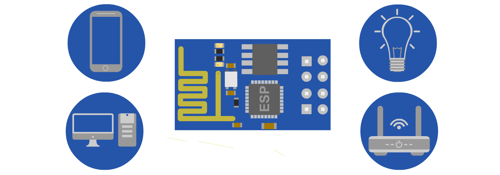
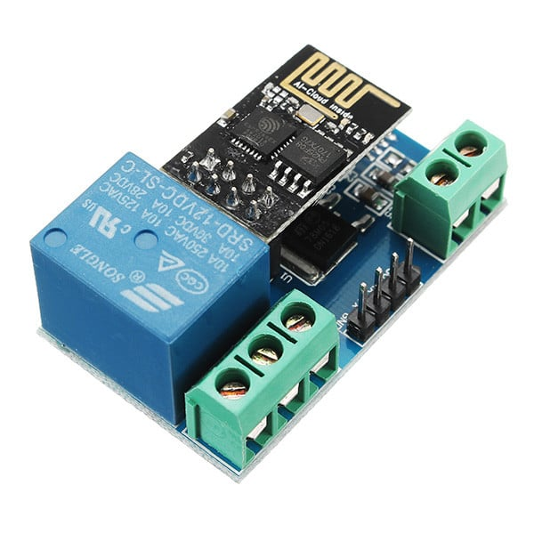
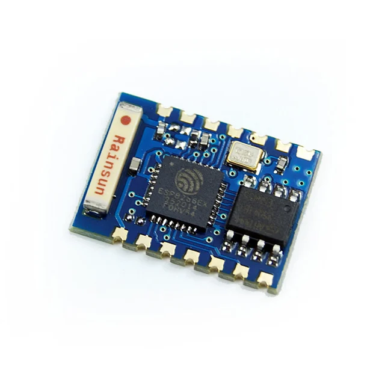
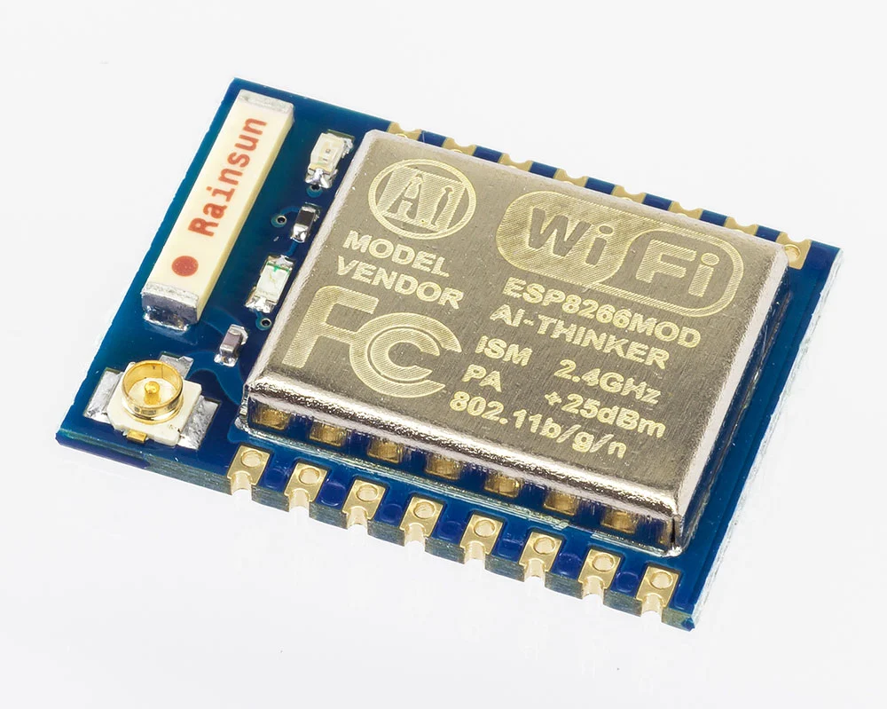
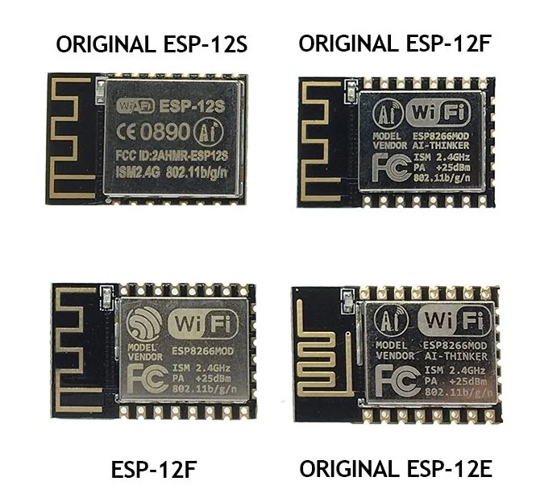
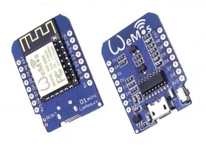
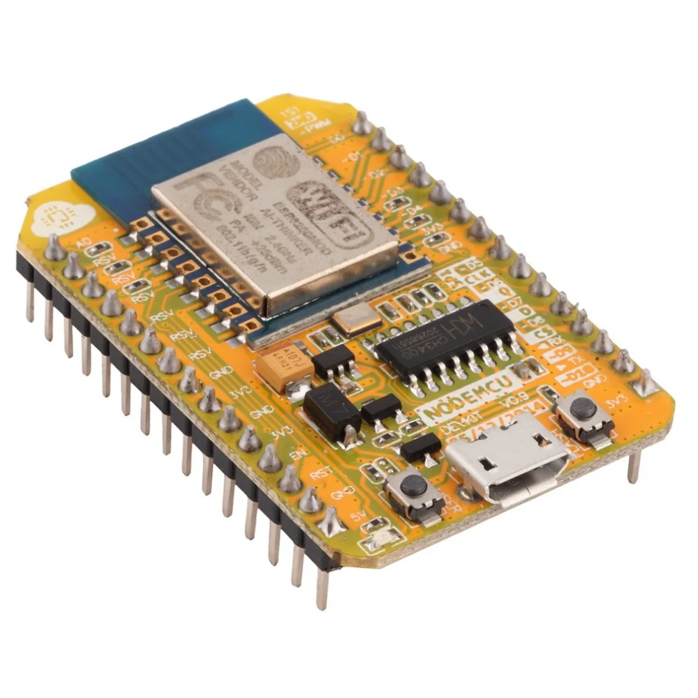
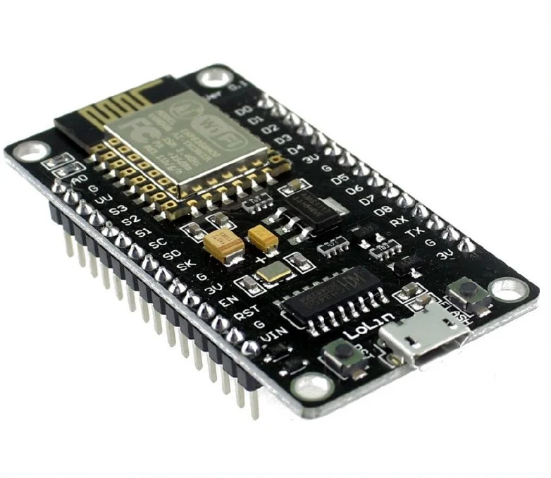

ESP8266-1
Знакомство с недорогим и функциональным микроконтроллером ESP8266: прошивка и пример использования
08 мая 2019
Отредактировано 25 мар 2024
Микроконтроллер ESP8266 — недорогая и функциональная микросхема, от производителя Espressif, которая поддерживает WiFi-интерфейса.
64
136К открытий142К показов

ESP8266 — китайский микроконтроллер (далее МК) от производителя Espressif с поддержкой WiFi-интерфейса. Управлять всем этим можно не только с браузера, но и из приложений на Android/iOS/Desktop. Если МК будет применяться там, куда не достаёт WiFi-сеть, то ESP8266 может работать в режиме точки доступа.
Примечание В этой статье не будут рассмотрены практические примеры применения ESP8266. Речь пойдёт об основных преимуществах и возможностях этого МК.
Содержание:
Микроконтроллер ESP8266 работает с внешней flash-памятью по интерфейсу SPI. Её объём варьируется от 512 Кбайт до 4 Мбайт. При желании и умении микросхему памяти можно будет перепаять на версию до 32 Мбайт.
Разновидности МК серии ESP и их плат
Существует около полутора десятка версий МК серии ESP и огромное количество плат с ними. Рассмотрим самые популярные из них.
Микроконтроллеры ESP8266
ESP-01
Микроконтроллер ESP-01

Плата WiFi-реле
ESP-03

ESP-07

ESP-12

В свою очередь, существует несколько вариантов этой версии: ESP-12S, ESP-12F, ESP-12E. Вторая и третья версии имеют на торце дополнительно 6 разведённых контактов.
Платы
WeMos D1 mini

NodeMCU v0.9/v1

Первое поколение плат серии NodeMCU. На ней распаяны все 11 GPIO-портов. Некоторые из них обладают дополнительными функциями (UART, I2C, SPI, PWM, ADC). Хотя на плате впаяны контакты, она занимает всю ширину беспаечной макетной платы, что затрудняет работу на ней. МК имеет 4 Мбайт flash-памяти. Также имеется мост CH340.
NodeMCU v3

Финальная версия платы этой серии. Существует и v2 «Amica», которая меньше по габаритам. v3 носит название «LoLin» и отличается от предыдущей версии только размерами и незначительными деталями (например дополнительной распайкой шины питания). Кроме традиционного моста CH340/CH341 на платы ставят чип CP2102, так что внимательней с выбором драйвера на них.
Все эти (и не только эти) платы выполнены на чипсете микроконтроллера ESP8266EX, а следовательно, характеристики у них одинаковые:
Как работать с микроконтроллером ESP8266?
Есть два способа работы с ним:
В большинстве случаев намного удобней прошивать МК и работать с ним со своей прошивкой. Однако тут тоже есть свои нюансы. Вот 3 варианта событий:
Например NodeMCU Flasher (которая подходит не только для плат NodeMCU) или ESPTool (необходим Python).
Однако в этой статье работа с МК и процесс прошивки будут рассмотрены в Arduino IDE.
Изначально среда Arduino IDE не предназначена для работы с МК серии ESP. Чтобы это исправить, идём в Файл → Настройки и в поле Дополнительные ссылки для Менеджера плат вставляем эту ссылку:
Потом открываем Инструменты → Плата → Менеджер плат и в открывшемся списке в самом низу находим плату «esp8266 by ESP8266 Community» (если с этим возникли трудности — используем поиск вверху окна). Устанавливаем последнюю версию платы (около 150 Мбайт).
После установки в списке плат появится немалое количество плат. Если не нашли свою плату или не знаете её названия — выбирайте Generic ESP8266 Module. Теперь можно выбрать свой МК в списке COM-портов.
У ESP8266 две скорости передачи: основная — её вы указываете при инициализации последовательного порта, и скорость, на которой передаётся отладочная информация. Она передаётся сразу после подачи питания на МК. Обычно это скорости 115200 бод и 74800 бод 0 соответственно.
Если вы не владеете базовыми знаниями работы с платформой Arduino, наверстать упущенное можно в нашей статье про основы использования Arduino.
🔥 Компьютер с Ryzen 7 8840U, Wi-Fi 6 и 32 ГБ оперативки уместили в складную клавиатуру
После скачивания платы ESP8266 с помощью менеджера, в примерах появится большое количество скетчей. Рассмотрим один из них (Файл → Примеры → ESP8266WebServer → HelloServer):
#include <ESP8266WiFi.h>
#include <WiFiClient.h>
#include <ESP8266WebServer.h>
const char* ssid = "........"; // Указываем имя существующей точки доступа
const char* password = "........"; // Указываем пароль существующей точки доступа
ESP8266WebServer server(80);
void handleRoot() { // Обработчик запроса клиента по корневому адресу
// Отправляем клиенту
server.send(200, "text/plain", "Привет от ESP8266!");
}
void handleNotFound() { // Обрабатываем небезызвестную ошибку 404
String message = "File Not Found\n\n";
message += "URI: ";
message += server.uri();
message += "\nMethod: ";
message += (server.method() == HTTP_GET) ? "GET" : "POST";
message += "\nArguments: ";
message += server.args();
message += "\n";
for (uint8_t i = 0; i < server.args(); i++) {
message += " " + server.argName(i) + ": " + server.arg(i) + "\n";
}
server.send(404, "text/plain", message);
}
void setup(void) {
Serial.begin(115200);
WiFi.mode(WIFI_STA); // Устанавливаем Wi-Fi модуль в режим клиента (STA)
WiFi.begin(ssid, password); // Устанавливаем ssid и пароль от сети, подключаемся
while (WiFi.status() != WL_CONNECTED) { // Ожидаем подключения к Wi-Fi
delay(500);
Serial.print(".");
}
// Выводим информацию о подключении
Serial.println("");
Serial.print("Подключено к ");
Serial.println(ssid);
Serial.print("IP адрес: ");
Serial.println(WiFi.localIP());
// Устанавливаем обработчики. Можно сделать двумя способами:
server.on("/", handleRoot);
server.on("/inline", []() {
server.send(200, "text/plain", "Отличная работа!");
});
server.onNotFound(handleNotFound); // Вызывается, когда обработчик не назначен
// Запускаем сервер
server.begin();
Serial.println("HTTP-сервер запущен");
}
void loop(void) {
server.handleClient();
}
Что делает этот скетч? МК подключается к вашей WiFi-сети и запускает сервер. В монитор последовательного порта выведется локальный IP-адрес (к примеру, 192.168.0.105). Вбиваем этот IP в адресную строку браузера, после чего в нём должна отобразиться строка «Привет от ESP8266!». Таким же образом можно проверить адрес /inline.
Ознакомиться с API МК можно в их официальном репозитории.
Внешняя память распределена на следующие разделы:
Файловая система SPIFFS
Один из плюсов внешней flash-памяти — файловая система. В неё можно с лёгкостью записать файлы (веб-странички, медиа-файлы и прочее) на микроконтроллеры ESP8266. На аппаратном уровне это можно было бы реализовать подключив к МК модуль SD-карт. Однако это решение требует свободных портов.
Размер файловой системы (от 32 Кбайт до 15 Мбайт) зависит от самого объема flash-памяти и от конфигурации, выставленной в Инстурменты → Flash size. Например, конфигурация 4M (2M SPIFFS) предназначена для МК с общим объёмом flash-памяти 4 Мбайт, 2 Мбайт из которых будут выделены под файловую систему.
SPIFFS не работает с папками — она содержит только список файлов. Соответственно, если загрузить в неё папку style, в которой будет файл header.css, то в файловую систему систему запишется файл с именем /style/header.css. Об этом стоит помнить, потому что длина файлового имени не должна превышать 31 символ (читается 32, но символ с кодом 0 отведён под завершение строки).
Сказ о том, как я за год решил более 600 leetcode задач
Для загрузки файлов потребуется инструмент ESP8266FS, интегрирующийся в Arduino IDE. Инструкция по установке:
Как работать с SPIFFS и файлами в ней, можно узнать в этой статье.
Энергонезависимая память EEPROM
Работа с внешней памятью немного отличается от стандартной.
Прошивка «по воздуху» OTA-Update
Для этого вам потребуется установленный Python.
В скетч нужно добавить файл: #include <ArduinoOTA.h>. Инициализируем и настраиваем OTA следующими строками:
ArduinoOTA.setHostname("Host-ESP");// Имя хоста
ArduinoOTA.setPassword((const char *)"password");// Пароль для подключения к хосту. Если не нужен — комментируем эту строку
ArduinoOTA.begin();// Инициализация
После этого достаточно в метод loop() добавить строку: ArduinoOTA.handle().
Прошиваем МК по проводу. В случае успешной загрузки в списке портов появится новый хост с именем «esp8266-xxxxxx», где esp8266 — указанное выше имя хоста, а xxxxxx — локальный IP-адрес МК. Выбираем его.
Теперь микроконтроллер ESP8266 можно прошивать «по воздуху».
Как сделать умный дом своими руками на Arduino и Яндекс.Алиса — пошаговая инструкция